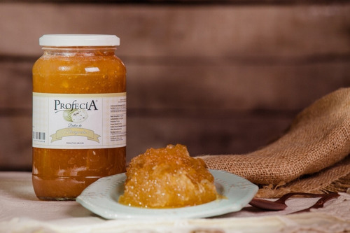

ESTOS SON LOS REGALOS SANJUANINOS QUE PODÉS LLEVARLE A TUS AMIGOS O FAMILIA
DULCE DE ALCAYOTA

Es un dulce, elaborado con las fibras caramelizadas de pulpa de alcayota
(también conocido en algunos lugares como cayote). Lo podés conseguir en
lugares de venta de productos regionales y en almacenes.
En San Juan suele consumirse junto con nuez, como postre.
Es un dulce, elaborado con las fibras caramelizadas de pulpa de alcayota
(también conocido en algunos lugares como cayote). Lo podés conseguir en
lugares de venta de productos regionales y en almacenes.
En San Juan suele consumirse junto con nuez, como postre.
Es un dulce, elaborado con las fibras caramelizadas de pulpa de alcayota
(también conocido en algunos lugares como cayote). Lo podés conseguir en
lugares de venta de productos regionales y en almacenes.
En San Juan suele consumirse junto con nuez, como postre.
VINO
Un producto ideal para llevar de regalo, encontras calidad a precios súper económicos.
En los aviones permiten que lleves una caja de vino X 6 unidades en los pies
COLACIONES
Son masas dulces rellenas de dulce de leche o dulce de alcayota. Podes conseguirlas en las panaderías
ACEITE DE OLIVA O ACEITUNAS
San Juan es una de las provincias que más aceite de oliva produce. Podés comprar aceite y aceitunas regionales de primera calidad en muchos almacenes y tiendas. O visitar las aceiteras de la RUTA DEL OLIVO.